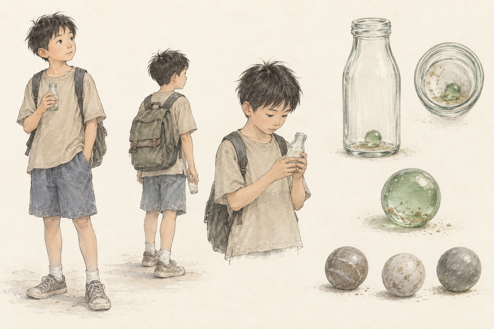
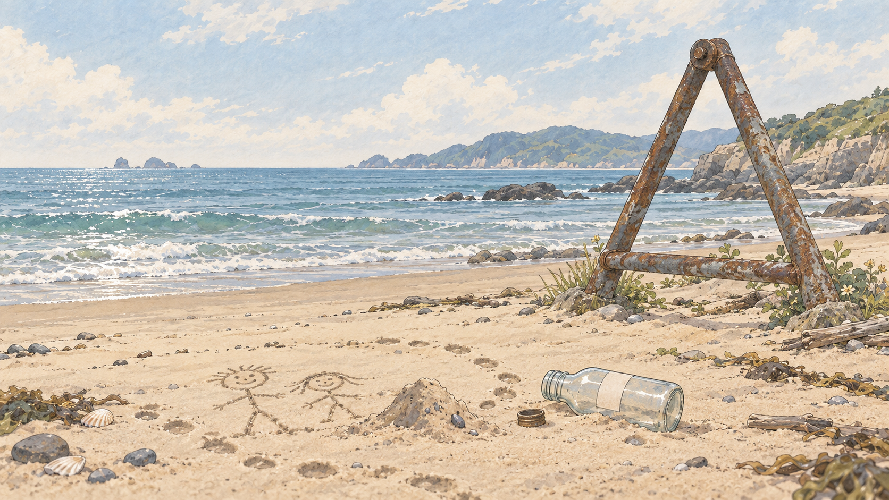

已有人物与道具首稿；非经过验证的角色三视图。- 剧本依据
- 学生；背书包；喜欢海边、抓小螃蟹；不愿把零碎时间攒成假期。第 1 场瓶里两颗球，第 4 场起保留一颗沾沙的绿球。
- 叙事作用 · 分析
- 通过行为提出“现在用时间”的选择；结尾主动把绿球交给管理员。
- 美术提案
- 首稿约十岁、黑短发、沙色上衣、灰蓝短裤、灰绿帆布书包，均为美术提案，精确年龄未设定。
- 连续性
- 固定脸型、发际线、身形与书包轮廓。海边穿拖鞋，不能把首稿运动鞋机械沿用至第 2 场。瓶中数量必须按场次变化。
- 表演 / 镜头
- 趴木台摇瓶；海边藏瓶；用手电看球；结尾递球。表演以重心与眼神为主。
- 下一步
- 补一张海边服装状态与递球动作；修正首稿灰球石质感。
返回索引 ↑- 剧本依据
- 用本子清点存储；故障时摘眼镜、掉笔、检查机器；吹去池子绿球上的沙；结尾接球并走进屋里。
- 叙事作用 · 分析
- 连接孩子与储存系统。由熟悉操作到无法解释故障，再接住新的可能。
- 美术提案
- 中年偏瘦、略驼背、短花白发、灰绿衬衣、深灰裤与细框眼镜；除眼镜、册子、笔外均为提案。
- 连续性
- 眼镜、册子、笔按场次记录位置；第 6 场眼镜摘下、笔掉落，第 8 场笔夹在合上的册子封皮。
- 表演 / 镜头
- 清点／摆手疏散／疲惫坐地／查看绿球。不要始终保持微笑或神秘导师姿态。
- 下一步
- 补工作与故障两种姿态，核对手持册子与笔。
返回索引 ↑- 剧本依据
- 海边追回池子；要求存时间用于学习；第 3 场拿竹棍与半瓶灰球；第 4 场叫吃饭；第 7 场洗衣并后悔未使用时间。
- 叙事作用 · 分析
- 把抽象时间选择放回亲子日常。既有管教，也有照料。
- 美术提案
- 低束发、灰蓝上衣、实用长裤与平底凉鞋；年龄感和服装为提案。首稿采用平静站姿，不把她固定为愤怒形象。
- 连续性
- 瓶中约半瓶灰球；灰球相撞无声。第 7 场剧本只有洗衣声音与画外话语，不强行安排正面出镜。
- 表演 / 镜头
- 追赶时身体前倾；讲道理时拿瓶；隔门叫吃饭；夜晚作为声场存在。
- 下一步
- 补焦急与疲惫的小幅表情；若制作第 3 场再单独处理竹棍动作，避免夸张。
返回索引 ↑- 剧本依据
- 从店里探头；询问抓蟹；展示满瓶灰球，说攒了小半年想环游半个中国；与池子讨论延时满足。
- 叙事作用 · 分析
- 用邻里闲谈补充时间储存的社会观念，与母亲的学习诉求形成不同动机。
- 美术提案
- 中年略壮、米色短袖、棕色围裙、深裤、便鞋，为提案；剧本未给出这些外貌细节。
- 连续性
- 自己瓶子是满瓶，区别母亲的半瓶；站位在店里或入口，不改成街边陌生摊贩。
- 表演 / 镜头
- 探头问候／拿瓶到孩子面前／日常争辩。避免反派式贪婪表情。
- 下一步
- 补探头与举瓶动作，确认店内柜台和瓶子的相对高度。
返回索引 ↑- 剧本依据
- 放学学生拿着装灰球的瓶子；储存点谈论攒假期和玩电脑；故障后担心换不了时间。
- 叙事作用 · 分析
- 呈现与池子不同的选择，并让故障从个人事件扩展为公共事件。
- 美术提案
- 先设计三个可区分的体型与发型模板；不规定统一校服，因为剧本未注明。此轮尚无群像图。
- 连续性
- 瓶子形制属于同一系统；球的数量可不同但故障阶段呈灰色。避免复制粘贴同一张脸。
- 表演 / 镜头
- 路过便利店／柜台排队／低头查看灰球。
- 下一步
- 先做轮廓小稿，再确定服装与群体走位。
返回索引 ↑- 剧本依据
- 有人质疑时间无法兑换；人群散去后，邻居提醒池子机器坏了。
- 叙事作用 · 分析
- 使故障具备社区影响，也交代池子仍然走向储存点的处境。
- 美术提案
- 邻居外貌、性别、衣着未定；作为背景角色按镜头需求最小化设计。
- 连续性
- 声音与出镜身份对应，勿为每句台词增加新的主角。
- 表演 / 镜头
- 门口聚集、离开、侧身提醒池子。
- 下一步
- 先在分镜标出必须出镜的人数；暂不批量生成肖像。
返回索引 ↑SCN_STO时间储存点
第 1、6、8 场 · 日外
 已生成正常状态的风格修订稿；绿光偏弱、室内入口未明确，尚未锁定空间。
已生成正常状态的风格修订稿；绿光偏弱、室内入口未明确，尚未锁定空间。- 剧本依据
- 门口木台与木牌；管理员的册子；角落陶缸式机器、底部微绿光与嗡声。结尾管理员走进屋里、池子留在门口。
- 叙事作用 · 分析
- 同一场地承载规则建立、故障与复苏，是全片状态连续性的核心。
- 美术提案
- 现图提出木棚与海港街景；剧本只确定设施与门内外关系。当前开放棚架尚不能完整解释“走进屋里”，需补内外空间。
- 连续性
- 锁定木台、机器、木牌、出入口和镜位。A：正常绿光、牌“致以未来”；B：光灭、瓶落灰球散、牌翻“活在当下”；C：狼狈残留、牌倒只见“当下”、结尾绿光映脸。
- 表演 / 镜头
- 主机位看清台面与机器；反打保留孩子在外、管理员在内。木牌文字后期排版。
- 下一步
- 优先补门口／室内关系图，修正常态绿光，再制作固定机位 B/C。
返回索引 ↑
新环境概念图；瓶盖标签被误画到瓶身，脚印环不完整，正式镜头需修正。无人勘景状态不对应第 2 场每一刻。- 剧本依据
- 沙画小人、沙堆、脚印；大三角铁旁有杂草和积沙；池子把沙与海水装进瓶子；瓶盖标签“请勿打开装物”；追跑时掉落拖鞋。
- 叙事作用 · 分析
- 用实际玩耍让“当下的时间”可见，也为沾沙绿球埋下物件线索。
- 美术提案
- 三角铁暂按露天铁制三角框架理解；形制、海岸朝向和尺度未明确，先作构图提案。
- 连续性
- 保持沙画、三角铁、海水线的相对位置；瓶盖、拖鞋随动作变化。沙子与水是状态，不是永久粘满所有资产。
- 表演 / 镜头
- 低机位观察沙画；取水动作；留出追跑与回头的运动空间。
- 下一步
- 新图作为动作前的环境勘景；补海水瓶和掉鞋后的镜头状态，确认三角铁形制。
返回索引 ↑- 剧本依据
- 与海边藏瓶动作形成固定视角接续；池子手中空瓶盖缠胶带；母亲拿半瓶灰球和竹棍；最终房门关上。
- 叙事作用 · 分析
- 把海边的自由活动切换到家庭约束；依靠相同动作建立转场。
- 美术提案
- 朴素墙面、通往房间的门、足够容纳两人的过道。具体户型和家具尚未设计，此轮没有配图。
- 连续性
- 海边与家里池子手的位置可匹配；瓶子由沙水变空，盖子已封胶带；门的位置须与房间场景对应。
- 表演 / 镜头
- 先设计匹配切接的机位，再补全家具；不给与叙事无关的陈设过高权重。
- 下一步
- 画一张俯视关系草图，核对门的开向与人物站位。
返回索引 ↑SCN_ROOM池子房间
第 4 场日内／第 7 场夜内
 日间房间修订图；已打开书包并移除抽屉多余球体。家具位置属于提案，未制作夜间同机位版本。
日间房间修订图；已打开书包并移除抽屉多余球体。家具位置属于提案，未制作夜间同机位版本。- 剧本依据
- 半开书包挂椅子；停住的墙钟；桌上作业与试卷；抽屉沾沙玻璃球、手电；胶带被撕开。夜里桌上瓶内一颗绿球，池子在床上。
- 叙事作用 · 分析
- 同一房间承载发现绿球与夜间思考；用物件位置维持连续。
- 美术提案
- 左窗、中部书桌、右床、门口看入的布局与木质家具为提案。房间精确尺寸不预设。
- 连续性
- 日夜不移动门窗、桌椅和床；半开书包保留；第 4 场开头球在抽屉、后移入瓶；夜里瓶中仅一球。静帧不能证明墙钟停走。
- 表演 / 镜头
- 抽屉特写／手电照球／桌面瓶子／床到桌的视线。第 7 场洗衣与水声来自画外。
- 下一步
- 新增图选第 4 场末段道具状态；夜版仅改照明与对应动作，先确认家庭空间关系。
返回索引 ↑- 剧本依据
- 池子站店门口付皱的一元钱，买冰棍后坐门口；老板探头；学生带瓶经过；木棍丢进垃圾桶。
- 叙事作用 · 分析
- 生活化对话场景，展示“把时间攒够再出发”的另一种想法。
- 美术提案
- 店内外用门槛连接，入口附近放垃圾桶，留学生通行区域。招牌、货架和学校距离未确定。
- 连续性
- 老板满瓶灰球；池子的瓶子先看后收；冰棍随镜头减少。自行车只在对白提及，不列为必须出镜资产。
- 表演 / 镜头
- 门内老板与门外孩子保持视线；通行学生置于后景，避免抢过对话。
- 下一步
- 先定双人对话轴线，再生成背景与老板站位参考。
返回索引 ↑